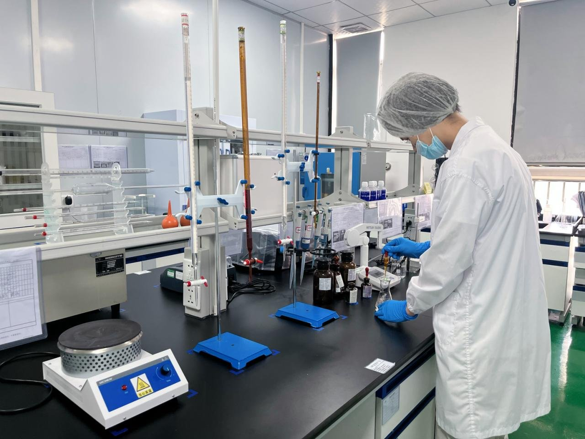

首页 / 行业洞察 / 欧洲净水器认证：CE、RoHS 与下单前要确认的事
行业洞察 / 选购指南
欧洲净水器认证：CE、RoHS 与下单前要确认的事

欧洲要的不是一张证书，而是一套证书——具体是哪一套，取决于您的型号与市场。本指南说明买家真正会问到的标志、我们能确认的内容，以及任何诚实的供应商都不会提前承诺的东西。
买家最先问到的标志
CE 标志是在欧洲经济区销售电气设备的起点。对净水器而言，通常分为两部分：低电压指令（LVD），涵盖电气安全；以及 EMC 指令，涵盖电磁兼容性——机器既不能对外发射干扰，附近其他设备工作时也不能因此失灵。
RoHS限制电气与电子设备中的有害物质。买家在问 CE 的同时也会问 RoHS，因为这是另一项独立指令，有自己的物质限量，并且在海关与零售连锁的检查中都会被查到。
REACH是欧盟关于化学物质的法规。对净水器而言，它之所以重要，是因为与饮用水接触的材料以及生产中使用的物质都受其约束。买家很少会直接点名要一份 REACH 证书，但他们会问产品是否符合 REACH。
UKCA是英国版的 CE 标志，同样分为 LVD 与 EMC 两部分。在英国销售的型号需要 UKCA 这一套，在欧盟销售的型号需要 CE 这一套。两者相关，但不能互换。
CB 测试报告往往是这些标志背后的基础：经认可实验室出具的 CB 报告可用于支持各国的标志。而 NSF/ANSI 42、53 与 58是美国饮用水标准，欧洲买家有时也会问到——它们是真实存在的标准，但与 CE 是两个不同的问题。下面还会提到。
我们的认证页面是怎么写的
我们的认证页面写得很明白：请告诉我们目标市场与型号，我们会在您下单前确认该型号对应的确切证书清单。
对欧盟市场，适用型号可提供 CE-LVD、CE-EMC、RoHS 与 REACH。对英国市场，适用型号可提供 UKCA-LVD 与 UKCA-EMC。其他市场按型号在询盘时逐单确认。适用型号的第三方测试报告可应要求提供。
这里有两个关键表述。「适用型号」是指证书清单因型号而异——带压缩机制冷的台式 RO，例如RP-C10，与大通量厨下 RO，例如RP-U03，所持的文件并不相同。而「按型号与订单逐单确认」是指，清单要对照您的型号、市场与品牌逐一核对之后才能承诺。
为什么清单要按型号与订单逐单确认
有三件事让证书清单因型号而异。第一，测试数据属于某一具体配置：换了加热元件、电源或控制板，文件所描述的就不再是您要出运的那台机器。第二，证书持有人很重要：以工厂名义出具的证书，不会自动成为以您品牌名义的证书。品牌转让与重新测试（如有需要）按订单逐单确认。第三，各市场会在 CE 之上再加自己的规则——法国会问食品接触与材料迁移报告，德国有自己的饮用水规则，而零售连锁或电商平台可能会要一份您的报关行从未提过的文件。
所以，对「你们有 CE 吗？」这个问题的诚实回答永远是「哪个型号、哪个市场？」任何供应商如果不问这两件事就直接回答「有」，那就是没有核对过文件。
我们不宣称什么
我们没有 NSF 认证，也不宣称持有 NSF/ANSI 42、53 或 58。如果您的市场需要 NSF，请告诉我们——我们会按型号与订单确认可行的方案，但不会把一份测试报告说成证书，也不会承诺我们没有的标志。
我们也不承诺笼统的 PFAS 或 BPA 宣称，也不会把食品接触或材料迁移报告——包括法国的 ACS——说成是每个型号都有的文件。某个市场需要这些文件时，按订单逐单确认，型号与市场都要写明。一个型号的报告不是另一个型号的报告。
这不是短处，而是定制化自有品牌认证的实际运作方式。那些第一天就什么都承诺的工厂，恰恰是文件经不起真实海关检查的工厂。
请发给我们什么，以便我们确认
请发四样东西：型号（产品页上的 RP 编号）、目标市场与国家、销售渠道及其要求——例如电商平台的上架规则或零售连锁的供应商表格——以及您的报关行或零售商点名要过的任何证书。有了这些，我们会在您下单前确认确切清单，并如实告诉您哪些需要重新测试、品牌转让或额外时间。
如果您还在选型号，请先从市场出发，而不是先从机器出发。先告诉我们国家，再挑型号——证书清单跟着市场走，先挑型号再回头补证书，是品牌最容易走的弯路。
常见问题
你们的净水器有 CE 吗？
CE-LVD、CE-EMC、RoHS 与 REACH 适用于部分型号。具体清单按型号与市场在下单前逐单确认——请先告诉我们型号与国家。
你们有 NSF 认证吗？
没有。我们不宣称持有 NSF/ANSI 42、53 或 58。如果您的市场需要 NSF，请告诉我们，我们会按型号与订单确认可行的方案。
法国市场呢——你们有 ACS 吗？
食品接触与材料迁移报告，包括市场需要的 ACS，按订单逐单确认，不会提前承诺每个型号都有。
认证要多久？
取决于型号、市场，以及是否需要重新测试或品牌转让。时间随订单确认，不提前猜测。
证书能写我们品牌的名字吗？
品牌转让与重新测试（如有需要）按订单逐单确认。
RP-C10 · RP-U03 · 认证支持 · 按起订量选型 · OEM / ODM · 按国家选择电压与插头 · 获取报价 →